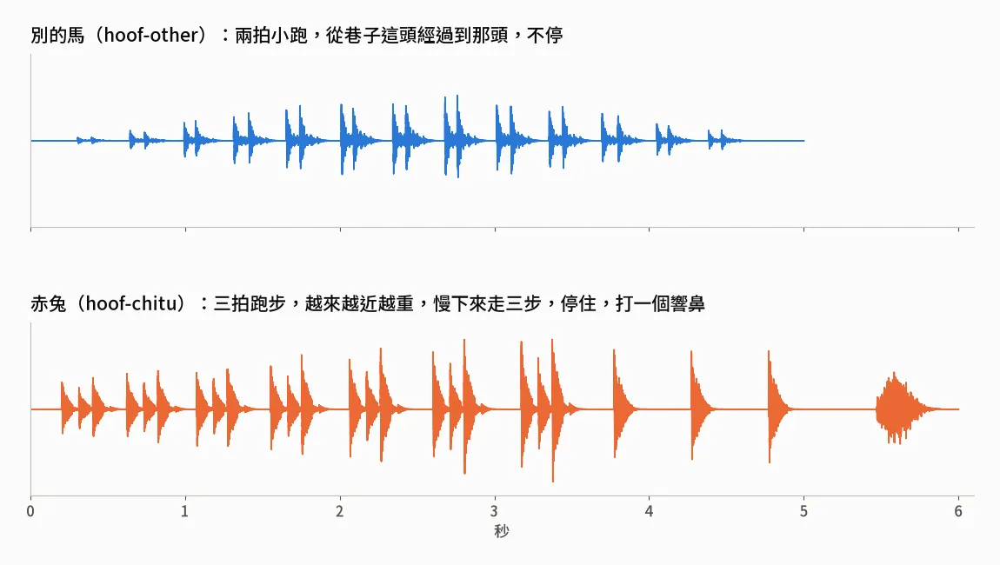
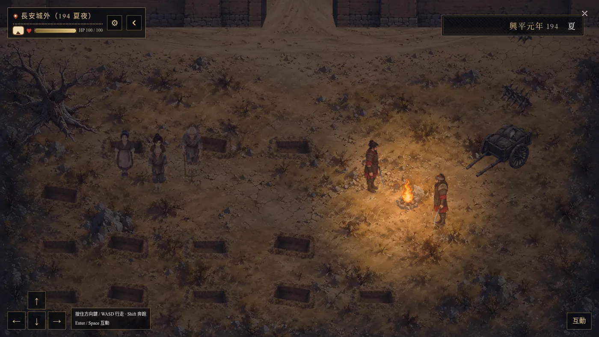
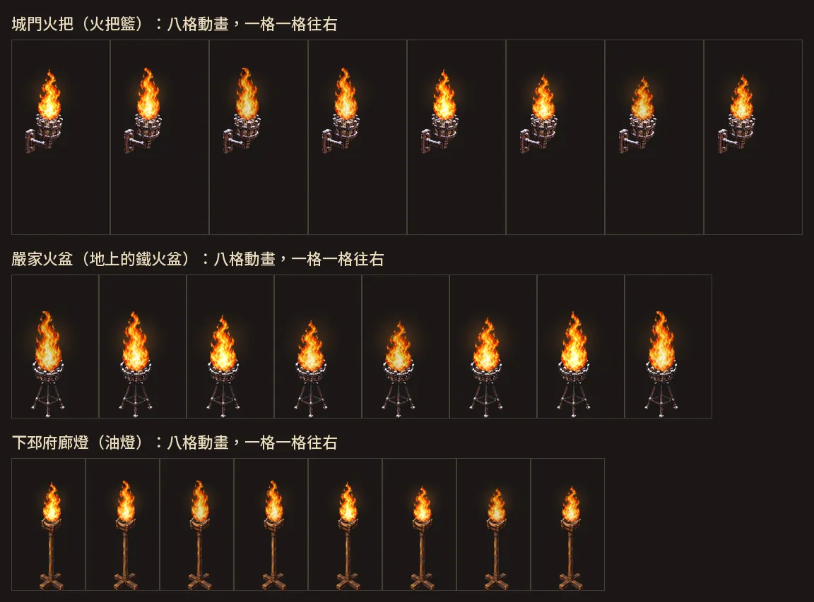
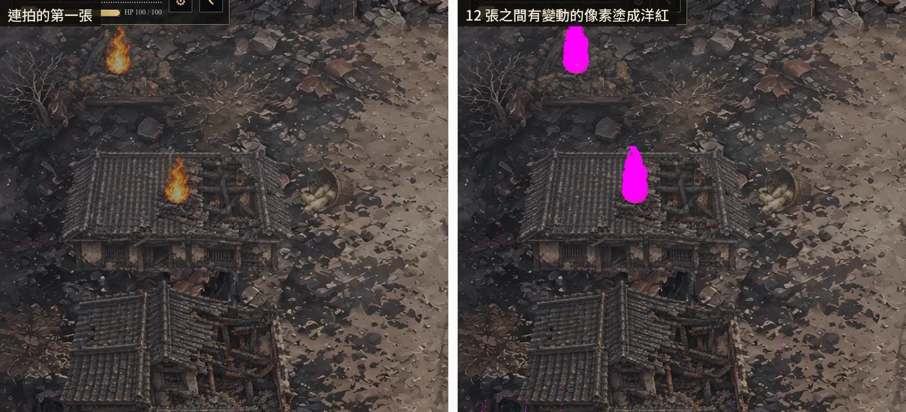

配樂、音效與天氣光影
這一章講《續》怎麼讓人聽到、看到時間在走：前作的配樂怎麼一幕一幕接上，第八章那首新曲怎麼產，馬蹄聲怎麼用程式合成，引擎的雪為什麼關掉、改成自己做，火怎麼動，還有地圖上的光和天氣參數。Larch RPG 在這幾件事上都有上限，每一節寫碰到哪一條、最後怎麼做，指令和檔名照原樣放。
前作的曲子，一幕一幕接上
遊戲裡現在有 36 首曲子：35 首沿用前作《仙泉．香布纏》，1 首是第八章新產的。設計檔一開始就寫了：沿用前作的配樂，曹營那一章可能要一兩首新的。
怎麼對是 AI 定的（2026-10-09 的決定紀錄）：前作哪一幕在劇情上對得到，就用那一幕的曲子。第一章城破接前作第二卷序那首，第五章巷口斷後接前作〈百零七騎〉那首。標題畫面和不喝那條路的尾聲用同一首〈A Hearth at the Frontier〉，這是前作尾聲那首，前作第二卷開頭那段塤在裡面再吹一次，整部頭尾接起來。
| 章 | 用到的曲子 |
|---|---|
| 序 碗 | Gathered at the Hearth |
| 第零幕 | Courtyard Laughter、Hearthlight in the Valley、A Promise at Twilight、Oath at the Edge of Winter |
| 第一章 | Beacon Fires at Dusk、A Thousand Winters Deep、One Bowl at Dawn、Return to the Mountain Gate |
| 第二章 | Return to the Mountain Gate、Cold Iron at the Border、Hearthlight in the Valley、A Thousand Winters Deep、Beacon Fires at Dusk |
| 第三章 | Cold Iron at the Border、Oath at the Edge of Winter、Morning in the Valley |
| 第四章 | Behind the Painted Screen、Before the Candle Fades |
| 第五章 | Before the City Burned、Sunlight on the Mirror、Iron and Silk、Dawn Over The Eastern Gate |
| 第六章 | Below the Floorboards、Arrow Carved In Silence、Beneath the Burning Gate、Small Bow Long Winter、Beyond the Stone Gate |
| 第七章 | Return to the Hearth、The Archer’s Return、Courtyard Laughter、The Third Lamp、Sorrow at the Gates、Untying the Red Cord、The Midnight Crossing、Crimson Ink on the Scroll |
| 第八章 | Twenty Five Winters（新曲） |
| 第九章 | A Lifetime of Loyalty、Vow in the Hidden Spring、Gathered at the Hearth、Where the Seasons Rest、By the Fading Hearth |
| 終之一 喝 | Light Beneath the Snow |
| 終之二 不喝 | A Promise at Twilight，墓前起換 A Hearth at the Frontier |
曲子寫在卡片上
AI 寫的 xu/game/src/music.py 裡，SCENES 是一張「卡片 id → 曲名」的表，現在 124 筆。建置時 apply() 把 bgm、bgmVolume、bgmLoop 寫進每一張卡，音量 0.3，照前作。
引擎在這裡有兩個行為要知道：
- 地圖卡也吃這三個欄位。AI 實測，換地圖就換曲，沒帶曲子的卡照舊播上一首，所以同一首可以跨好幾張卡一直播下去。
- 在地圖事件裡叫出來的對話卡不會換曲。要換，就在事件裡放一個
music步驟。不喝的尾聲從墓前那幾張卡起，就是這樣換成〈A Hearth at the Frontier〉。
前作的曲檔有一些沒進版控，所以 python3 src/music.py sync 會硬連結一份進 xu/game/assets/bgm/，跟著《續》一起收進 repo，前作那邊清掉也不會跟著不見。
檢查有兩道。tests/check_static.py 擋三種漏掉：地圖卡沒有配樂、章節字卡沒有配樂、標題畫面沒有配樂。node tests/title_music.mjs 開瀏覽器看標題畫面、序、第一幕各在播哪一首，負控制是進第一幕地圖以後，序那首必須停掉。
還掛著兩件：同一首會在不同章出現（〈A Thousand Winters Deep〉在第一章的五原、第二章的墳都有），等我聽過覺得重複再換；戰鬥沒有另外配戰鬥曲，沿用那張地圖的曲子。
第八章那首新曲
第八章是許都曹營的二十五年。我定的方向是畫面和音樂一年比一年淡。
前作的配樂是用 Gemini 產的，新曲照同一個做法：python3 art/music.py gen [N] 一次產 N 首候選，純音樂，存在 art/music_raw/（不進版控），選定的那首複製到 assets/bgm/。產曲服務會間歇性逾時，程式每首最多試四次。
提示詞是 AI 照前作的樂器分工寫的。前作裡塤是五原、是布，古琴是家，胡笳和低音鼓是戰場。這一首讓古琴撥弦一圈一圈轉，悶的手鼓像馬廄裡換腳的馬，塤只在很遠的地方起個頭就散掉。程式註解寫了理由：他不能往北看太久。
[Instrumental only, no vocals] A numb, patient, repetitive piece for a man doing the same chores in an enemy army's stables and granary, year after year, for twenty-five years. A plain, steady plucked Guqin ostinato that turns like the seasons and never changes, a soft muted frame drum like hooves shifting in a stable, a little dry wind. Now and then a lonely Xun melody begins very faintly, far away, like a memory of the northern frontier, and fades out before it can finish. Restrained, grey, quietly enduring, emotionally held back; no climax, no big strings, no battle drums. Eastern Han dynasty China, dark classical film score style, small ensemble. Slow tempo, around 60 BPM. Seamless loop.
兩輪產了四首，AI 讓 Gemini 代聽打分，選分數高的那首，存成 assets/bgm/Twenty_Five_Winters.mp3。代聽有個問題：它分不出古琴和吉他，連前作的曲子都有一半被判成吉他。所以上架前要確認的清單上，這首還掛著一條：我要親耳聽過再定。
一年比一年淡，做到每一年
2026-10-09 的第一版，照魏續的走路圖換年紀，分四個時代做地圖卡：198 到 204、205 到 212、213 到 222、223。每個時代一張春夏秋的卡，冬天另一張雪景（223 年只有春夏秋）。時代越後面越暗、暗角越重、空氣裡的光塵越少，配樂一個時代比一個時代小聲。
問題出在地圖卡是同一個時代共用的，卡上的音量是固定值，一個時代裡每一年都一樣大聲。2026-10-14 AI 改成逐年：198、205、213、223 四年當錨點，音量 0.30、0.22、0.15、0.09，中間每一年線性插值（music.year_volume()）。每次換年、換季，一個條件事件 h-env 跑兩個步驟：weather 把畫面暗度設成那一年的值，music 把同一首曲子的音量設成那一年的值。暗度從 198 年的 0.04 慢慢加到 223 年的 0.26，冬天再加 0.4。
驗收：node tests/vol8_probe.mjs 把起點分別放在四個時代的地圖卡，量播放器裡 <audio> 實際的音量，要一個比一個小；check_static 擋逐年音量沒有一直往下。2026-10-14 那一輪，第八章一年一年過的路線整章跑了 1,402 秒，每一季的音量斷言都過。
音效：鈴聲不用，馬蹄聲自己合成
做前作的時候（2026-10-03）我說過：「鈴聲很難聽 不論哪一卷 都拿掉」。《續》照這條，check_static 在專案裡看到 chime 就擋。
第五章要兩種馬蹄聲。劇本的寫法是：門檻邊劈柴時，遠處偶爾有馬蹄聲，大多是別的馬；〈私宅〉那一夜畫面上不提示是誰，聽過前面那些別的馬的玩家，自己聽得出來。手邊沒有現成的馬蹄音效，AI 寫了 xu/game/art/sfx.py，用 numpy 和 scipy 直接合成：
- 別的馬
hoof-other：兩拍小跑，輕、遠，從巷子這頭經過到那頭，5 秒。 - 赤兔
hoof-chitu：三拍跑步，由遠而近、越來越重，慢下來走三步，停在門口，打一個響鼻，6 秒。
一下蹄聲疊兩層：一個很快衰減的低頻正弦波當悶響，一段帶通雜訊當碎響，最後加四個延遲的回音，再用 ffmpeg 轉成 96k 的 mp3。

怎麼放也是 AI 定的：門檻邊第一次劈柴一定是別的馬，接一句「不是她。」；再劈一次，就是〈私宅〉那一夜的赤兔。不做隨機，測試和玩家都不會卡。
第六章加了一個 knock：指節敲在地窖的厚木蓋板上，短、悶、有木頭的共鳴。在柴房按一下動作鍵就敲一下，停 1.5 秒算一次，剛好敲兩下蓋板才開，一下、三下都不開。同一個聲音後來又用了兩次：〈搜屋夜〉藏米的那段時限裡，每 2.2 秒響一下，畫面跟著輕震；第七章划船時 700 毫秒內連划兩格，音量壓到 0.22 響一下，配一道橘色閃光，表示驚動了曹營。
戰鬥裡的揮刀聲是引擎自己的。
天氣和光：先用引擎的參數
2026-10-05 的素材清單就這樣規劃：天氣和時間用地圖的環境參數做，不另外畫；第八章的一年比一年淡、四季，都靠這組參數加同一張底圖。《續》用到的參數：
| 參數 | 做什麼 | 《續》用在哪 |
|---|---|---|
darkness |
整張變暗 | 每一張夜景；第八章逐年變暗 |
lights |
一盞一盞的光：位置、半徑、顏色、會不會閃（flicker） |
門燈、火盆、營火、月光 |
fog |
霧的濃度和顏色 | 五原城破、逃難的路 |
particles |
飄在空中的粒子：光塵、花瓣、火星 | 嚴家的花瓣、城破的火星 |
rays |
斜照的光束 | 白天的院子、林子 |
clouds |
地上的雲影 | 嚴家的夏天 |
vignette |
四角暗角 | 幾乎每一張 |
tint、tintStrength |
整張染一層顏色 | 嚴家的春夏秋 |
critters |
蝴蝶、鳥 | 嚴家的春夏秋 |
樹葉光斑（dapple）這次沒用。後院和城南宅白灰牆上的樹影是畫在牆的圖裡的；2026-10-14 還把原本鏡射接長、看得出左右對稱的樹影，重產成不重複的斑駁影子。
嚴家的四季
嚴家一年有四張地圖卡。2026-10-15 我留的回饋是：「一年至少春夏秋冬各一次自由活動，完整的 4 季地圖，4 季應該要有一定程度的變化」。冬天用原本有雪的那張；春夏秋三季共用一張去掉雪的新圖（a2g），三季的差別全靠環境參數（xu/game/src/map_a2.py 的 ENV）：
- 春：花瓣、整張染一層淡粉（強度 0.07）、蝴蝶。
- 夏：光塵、光束 0.5、雲影 0.25、淡黃、蝴蝶和鳥都有。
- 秋：花瓣、橘色（強度 0.2）、鳥。
- 冬：光塵，地上留著原圖的雪。
暗度調過的幾處
- 第二章城頭的夜：一開始暗度 0.62，太暗看不到路，2026-10-07 改成 0.38。這張圖的光是一盞不閃的月光（半徑 12 格，淡藍
#c8d8ff）。 - 第三章〈荃〉的雪夜：牆面偏亮，2026-10-14 門燈半徑 4 格收到 3 格，暗度 0.62 調到 0.66。
- 第六章被押到城外挖坑：每挖完一個坑，事件裡一個
weather步驟把天調暗一點，0.3、0.42、0.55。 - 第九章山裡五天：一天一張地圖卡，暗度從 0.10 起一天加 0.05，光束一天比一天少。
油燈、火盆、營火都開 flicker，月光和天快亮時的天光不開。光源半徑只收 0.5 到 12 格，而且要在地圖裡：2026-10-09 有一盞設了 14，整個播放器壞掉，現在 check_static 擋。
光也拿來當玩法
第五章〈躲巡兵〉：宵禁的長安街上，兩個西涼兵各走各的路，走到停靠點就停下來，火把在地上照出一片黃光，光裡的格子一碰就被看見。引擎的事件不能跟著人走，所以光是一張固定的圖：art/glow.py 畫的柔邊橢圓，8×7 格，邊上一圈細亮線，看得出光照到哪裡。每個停靠點一張，巡兵停在哪一點，就亮哪一張。被看見的格子是鋪在光上的棋盤格觸碰事件，任何四向的走法都會踩到至少一格。
第六章城外的夜：營火照得到的範圍是一個橢圓（橫向半徑 5.6 格、縱向 4.6 格），邊緣那一圈格子一碰就把人頂回黑處，要繞著光走到糧車拿半袋米。

第七章划船出城：曹營兩個火盆照得到的水面也是一碰就頂回去；划太急，就是上一節那聲敲擊和橘色閃光。
第六、七章的自動玩家走路時，拿同一個範圍當「要避開的格子」，地圖程式和測試共用一個範圍。
下雪：引擎的雪不自然，就自己做
最早是 2026-10-08，嚴家試過一直下小雪，我玩了覺得怪，同一晚就拿掉，只留地上的雪。之後的雪景都做在物件上：〈荃〉的大雪夜、〈快馬〉雪還沒化、第八章的冬天，是把既有物件的選定圖送去改圖，同一個物件蓋上厚雪、拿掉落葉，設計檔照抄原版一份。屋裡不下雪。
2026-10-20 我玩第八章，留了一則「下雪不自然」。AI 量了引擎的雪：固定半徑 1.5 到 3.5 像素的小圓點，不隨解析度放大，全部用同一個速度往下飄（每秒 25 像素），能調的只有數量。我回：「想辦法調整，不行就自己設計」。
外掛 HUD 鋪一層雪做不到：HUD 的寬高被夾在 640 像素以內，只能貼四個角。AI 改用引擎的角色動畫，一張很高的動畫圖當一個「角色」，一塊一塊鋪滿地圖：
art/snow.py產動畫圖assets/snow/snow-<light|heavy>-<a|b|c>.png：一張 8 格寬、10 格高（一格畫面 384×480 像素），16 格動畫，每秒 12 格，1.33 秒一輪。src/snow.py在建置的最後一步跑：環境設成下雪的地圖，引擎的雪強度改成 0（暗度不動），每 8 欄放一個、每 8 列一段（上下重疊兩列補邊），a、b、c 三種亂數輪流鋪，免得每 8 格就重複一次。- 事件放在每一段最下面那一列。引擎照事件站的那一列排前後，最下一列就畫在這一段所有人物和物件上面。
雪花分遠、中、近三層：越近越大、越亮、落得越快（每秒 1.1、1.9、3.0 格），左右輕飄，再加一點往右的風。每片雪只在自己的壽命裡出現，頭尾三格淡入淡出；壽命跨過最後一格就接回第 0 格，所以循環沒有接縫。程式註解寫的理由是：俯視角看雪，本來就是出現、往下飄一段、落地不見。

踩到的坑有三個：
- 第一版一格畫面 256×960 像素、24 格動畫，整張地圖只剩「這張地圖的資料無法讀取」。引擎的角色圖每格寬高最多 512 像素、最多 16 格，超過一個就整張不讀。改成現在的 8×10 格、16 格。同一天第七章傷兵的道具圖（384×677）也踩到同一條。現在
check_static的 9n 檢查全專案每一張角色圖，負控制是重建前抓到 26 處。 - 自製的雪是角色圖，夜色會連它一起壓暗；引擎自己的雪畫在夜色上面。夜裡的雪地上偏淡，密度從 0.30 提到 0.55，中、近兩層放大。上面那張是〈荃〉的雪夜，暗度 0.66，截圖裡自製的雪還是比引擎的暗。
- 同一晚我玩第三章，留了一則「雪粒有一點太大，再細一點點」。三層的半徑各縮兩到三成，片數不變，七張下雪的地圖一起變細。
下雪的地圖現在七張：第零幕過年、第一章逃難的路、第三章〈快馬〉和〈荃〉、第八章三個時代的冬天。要更密、更大、更慢，都在 art/snow.py 開頭的 LAYERS、WIND、DENSITY 調。check_static 的 9m 檢查每張下雪的地圖都鋪滿、事件都在每一段最下面一列；某一格附近都被別的事件佔了，那一塊就少一片雪，檢查會數出來。
會動的火
2026-10-08 我問火能不能做成動圖：循環、有時間差，不要大家一起閃。
AI 先試動態 WebP：引擎用 canvas 畫圖，canvas 只畫動圖的第一格（HTML 規格就是這樣，實測也不會動）。所以改用引擎的角色動畫：一團火一張橫排的動畫圖，事件開 animate 和 fps。
第一版是從畫好的牆上找出火（照火心的亮黃白色找），把那塊牆補回去，再讓原本那團火搖起來。同一晚又改了兩次：先是框火的範圍把牆上的火光一起框進去扭，改成只讓火舌動；接著我定了：牆上不要畫火，火另外做成物件，才不會互相影響。
現在的做法在 xu/game/art/fires.py。牆線產圖時用「去掉火」的版本，火由三層疊成：
- 光暈：暖色，中心最亮、往外淡掉，強度跟著閃。
- 火架：不動。地上的鐵火盆、牆上的火把籃，還有燒焦的梁木堆、營火、油燈，收在共用的
art/fireset/，每張地圖切圖時直接拿。火架已經畫在物件上的（望樓台上、營門柱頂），就只放火焰和光暈。 - 火焰：生成的一團火，8 格動畫，往上拉長縮短、上半部左右擺、亮度閃，底部壓在火口不動。

錯開的做法：每團火從不同的格開始（第 i 團從第 i×3 格），每秒 7 到 9 格輪著，同一張地圖上的火不會一起閃。動畫圖寬度超過 2 格，引擎就不幫它畫腳下的影子。寬度也不能超過 8 格：2026-10-09 有一團灶火的事件格離火太遠，圖被撐到 8 格以上，引擎的角色倍率只收 0.25 到 8，整個播放器壞掉。分層地圖上現在一共 75 團火，季節版、雪景版各自那一份也算在內。
驗收用 node tests/fire_anim.mjs <地圖> <鍵> <主角 x> <主角 y>：每 130 毫秒截一張，連截 12 張，比每團火附近的畫面，每團火都要在變；負控制是牆上沒有火的一塊不能變。丁原營那張的營火光暈整片在閃，自動判斷抓不出火，改成一區一區比對。

有的火只在某些段落點著。第五章城南宅門邊那盞油燈，事件條件是變數 c5_lamp 等於 0，演到「然後燈滅了。」那一下改掉這個變數，燈就熄了。燈的樣子我定過：只有油燈和火把，不要燈籠，也不要玻璃燈。
試過、沒留下來的
| 做法 | 為什麼不用 | 改成 |
|---|---|---|
| 嚴家一直下小雪（2026-10-08） | 我玩了覺得怪 | 只留地上的雪 |
| 用動態 WebP 做會動的火 | canvas 只畫第一格 | 引擎的角色動畫 |
| 從畫好的牆上摳火來動 | 牆上的火光一起被扭 | 牆不畫火，火架、火焰、光暈另外做 |
| 用外掛 HUD 鋪一層雪 | HUD 寬高最多 640 像素，只能貼四個角 | 很高的動畫角色圖鋪滿地圖 |
| 第一版自製雪（每格 256×960、24 格） | 超過角色圖上限，整張地圖讀不出來 | 8×10 格、16 格 |
| 引擎的雪 | 固定大小的小圓點，同一個速度 | 強度設 0，換成自製的 |
| 第八章照時代換音量 | 共用的地圖卡表達不了每一年 | 四個錨點之間逐年插值 |
| 只靠 Gemini 代聽選曲 | 分不出古琴和吉他 | 等我親耳聽 |
接下來
- 〈Twenty Five Winters〉等我親耳聽過再定；重複出現的曲子，等我聽過再決定換不換。
- 上架前要核對配樂的權利：35 首前作的曲子和這首新曲，產出的服務條款、能不能商業使用都要確認，新曲的提示詞、產出日期、最終檔案都留著（
xu/權利盤點.md）。三個音效是本機程式合成的。 - 地圖正在整個重做。五原的地面目前只做了秋天那一套，冬天的雪、燒過、空了還要各產一套；新地圖的光和影子畫在整張原畫裡，做法在走進原畫。
- 這一章碰到的引擎上限（角色圖每格 512 像素、16 格，HUD 最多 8 個，光源半徑 12），完整的清單和繞法在 Larch RPG 引擎實測。